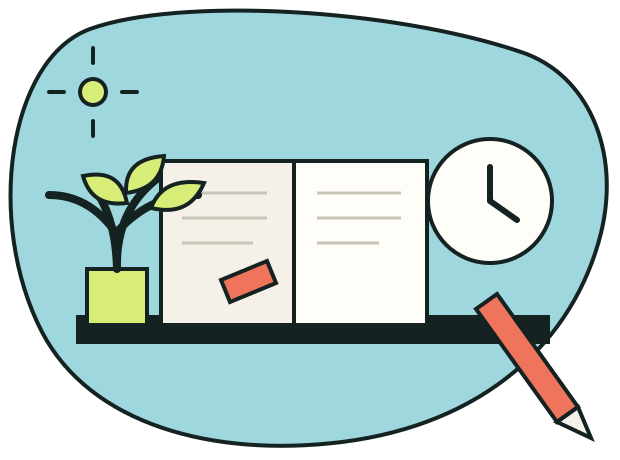
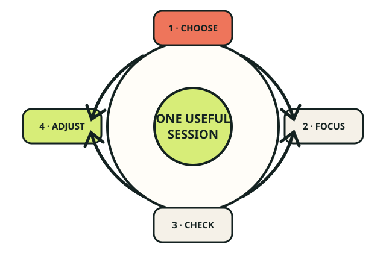

Study with intention
Less overwhelm.
More progress.
FocusLab helps you choose a proven study approach, shape a realistic session, and begin with a clear next step.
Your saved library is ready when you are.

25 min focus one clear goalA calmer way to begin
Three small decisions. One useful session.
Good studying is not about forcing more hours into your day. It starts by matching the method to the work in front of you.
-
01
Name the outcome
Choose one thing you want to understand, recall, or finish.
-
02
Match the method
Filter techniques by goal, available time, and mental energy.
-
03
Protect the block
Set a realistic session, remove one distraction, and start.

Designed for real days
Use the energy you have—not the energy you wish you had.
FocusLab includes short resets, deep-work structures, recall exercises, and collaborative methods. Save the ones that work for you and return to them when you need a quick decision.
- 18 techniques with clear instructions
- Filters for time, energy, and purpose
- A session plan you can review before starting
Ready when you are